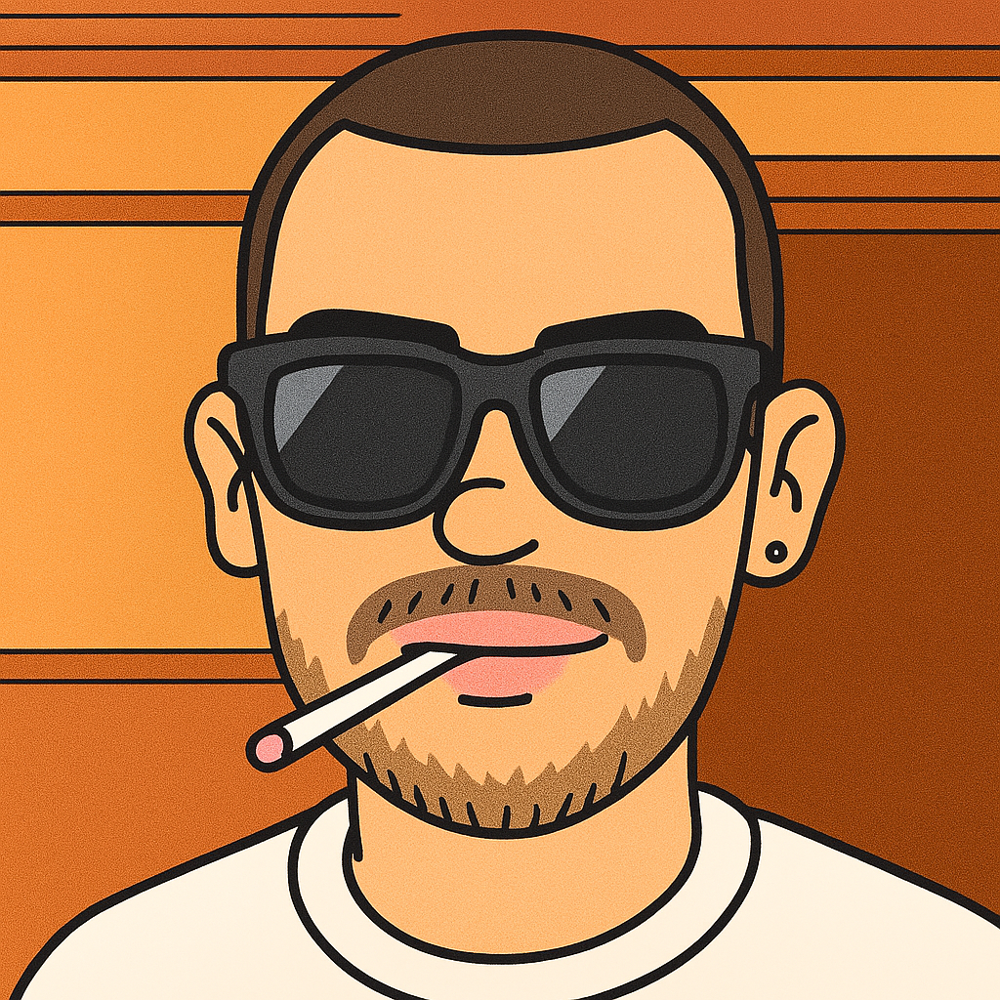
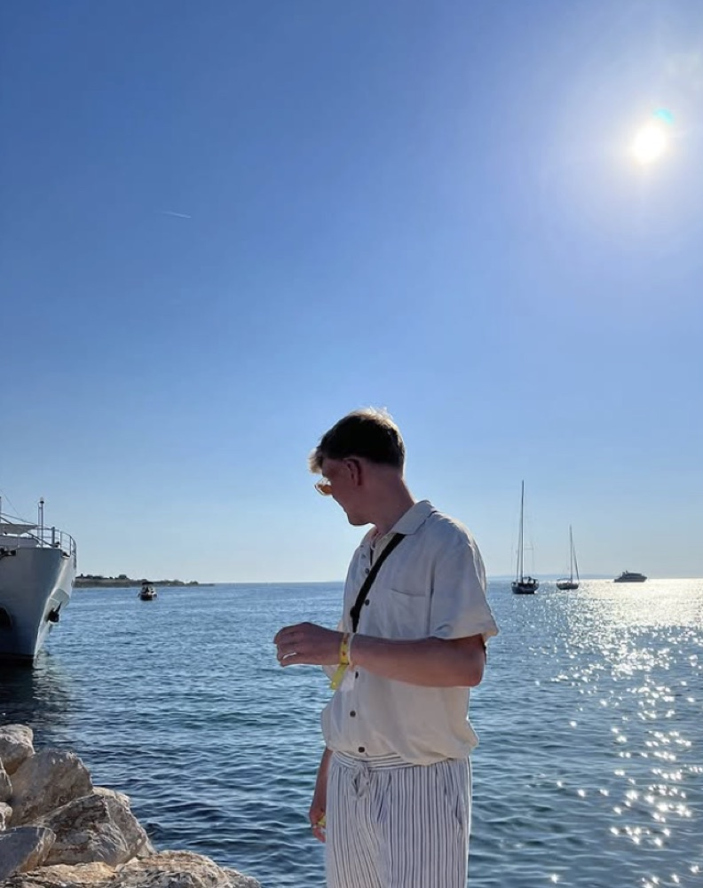

SESSION / 10
SESSION / 10DJ Set #10
ZweiKlang · Live Session
Independent DJ duo · Freiburg im Breisgau
48° N / 7° EHouse, der sich nach dem Moment anfühlt.
Von der goldenen Stunde bis tief in die Nacht.
01 / Musik
Ein Set vom Opfinger Baggersee.
Organischer Groove, tiefe Bässe und Zeit zum Abschalten.
The lakeside session
Ein Stück Sommer zum Mitnehmen. Unser DJ-Set direkt auf SoundCloud.
Lädt den SoundCloud-Player. Dabei werden Daten an SoundCloud übertragen.
02 / Recorded moments
SESSION / 10ZweiKlang · Live Session
 SESSION / 09
SESSION / 09ZweiKlang · Live Session
 SESSION / 08
SESSION / 08ZweiKlang · Live Session


03 / Das Duo
Wir sind ghostak & artemis aus Freiburg. Was uns verbindet? Die Begeisterung für House.
Irgendwann wurde aus gemeinsam Musik hören gemeinsam auflegen. Heute spielen wir in Bars und Clubs und nehmen seit 2025 auch YouTube-Sets auf – mit besonderen Locations und Drohnen-Shots von Artemis.
„Wir passen uns der aktuellen Situation an und begeistern so die Crowd.“Mehr über ZweiKlang
04 / Live & Erinnerungen
Ein Blick zurück auf unsere Sessions.
Neue Termine? Schreib uns.
Rückblick / 2025
Freiburg · All Night Long mit Sven K.
Freiburg · Jazz House & FPV-Drohne
Freiburg-Betzenhausen · Organic House · Private Party
05 / Booking
Jeder Gig beginnt bei euch: mit der Location, der Stimmung und dem Moment. Format, Dauer und Preis stimmen wir gemeinsam ab.
Live DJ Set für Bar, Café oder Club. Von entspanntem Ambiente bis zur Main Time.
YouTube-Kooperation mit Musik, Verlinkung und Drohnen-Shots eurer Location.
All Night Long. Ein durchgehender musikalischer Bogen für euren ganzen Abend.
* Preisangabe aus unserem bisherigen Angebot. Den konkreten Umfang und aktuellen Preis bestätigen wir in eurer Anfrage.
06 / Let's make it happen
Club-Slot, Rooftop, private Session oder gemeinsame Idee: Wir freuen uns, von euch zu hören.
zweiklangkontakt@gmail.com